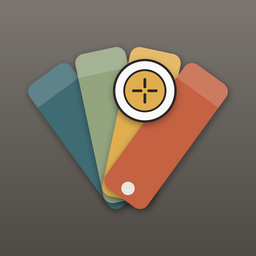

Kulora
Identify any colour from a photo. Colour matching works offline.
Take a photo of a wall, a sofa or a tile, or open one you already have, and touch the colour you want. Kulora tells you what it is — in the codes designers and paint shops use — and what it means for a room.
What it does
- Measures the colour you touch A magnifier to hit the exact spot, an area rather than a single noisy pixel, and a white-reference correction for the colour of the light in the room.
- Explains it in every system it knows HEX, RGB, CMYK, Lab, OKLCH and more; the nearest named colours; a Munsell notation a paint shop can mix from; and the nearest Federal Standard 595 paint — each with how close the match really is.
- Says what it will do in a room How much light it reflects, whether it reads warm or cool, its undertone, what it goes with, and colours that harmonise with it.
- Keeps your colours Every photo becomes a session you can come back to, search, label and share as text, a spreadsheet or an image card.
- Uses the palettes you already have Import a colour library you own (ASE, ACO, GPL or CSV) and Kulora matches against it too — on your device only.
What stays on your device
No account and no server of ours. Every colour Kulora knows ships inside it, so colour matching works with no connection, and your photos and colours stay on your device, encrypted, unless you share something yourself. The app's own code makes no network requests.
The Android app shows ads — a banner under the colour library and one under the history list, never over a photo or a colour you are measuring. They come from the Yandex Advertising Network, which uses the internet and, only if you allow it, your advertising ID; you can change that in Settings → Advertising. The web, iPhone, iPad and desktop versions have no ads.
Languages
English, Deutsch, Français, Italiano, Русский.